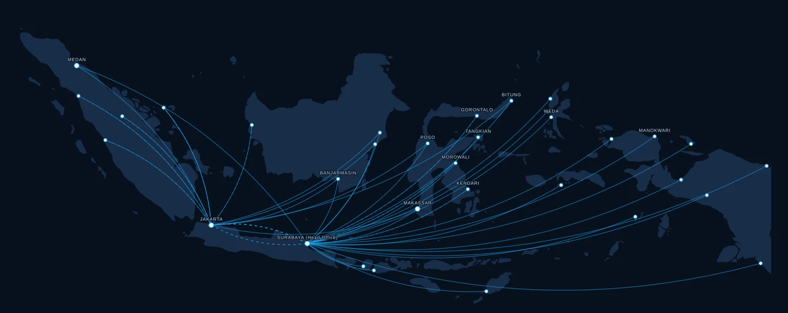

History
Built Over Decades. Moving Forward Every Day.
The story of an Indonesian family company that turned a single port in Surabaya into infrastructure for the whole archipelago.
The Timeline
Milestones, Verified.
Each entry below is drawn from the company’s published record. The archive lives in Surabaya; the operations it describes are still running today.
-
1971
Founded in Surabaya
Tanto begins as a family-owned shipping company in Surabaya, East Java — the industrial heart of the archipelago.
-
1992
First Container to Bitung
Tanto becomes the first shipping line to carry a container to Bitung, opening one of Indonesia’s eastern gateways to container service. Being a first mover in new markets is a challenge to the culture — and a benefit to the customers who ride the growth.
-
FIRSTS
Digital First-Mover
First in Indonesia to introduce the SMS Release Order and the Online Container Information System — early digital tools that saved customers time and money, and set the standard for IT innovation in the industry.
-
GROWTH
The Network Grows
More than five decades of shipping experience have built a network across seven regions — with the knowledge and expertise to comply with the highest ship-management standards and the strictest safety and environmental protection requirements. Customers entrust more than one million containers to the company every year.
-
TODAY
Infrastructure For The Archipelago
60+ vessels, 70,000+ TEU of fleet capacity, 39 ports, 32 office locations — with ISO 9001 and ISO 4500 certified operations.
Experience + Innovation
The Old Company, Still Improving Things.
“We’re always thinking on how to improve things.” That line from the company’s own service advantages still describes how Tanto works: the experience of five decades applied to a modern fleet, a digital network and a customer base that has grown with the country.



The Next Chapter
Wherever Indonesia Moves, We Move With It.
Join the network — as a customer, or as part of the team.